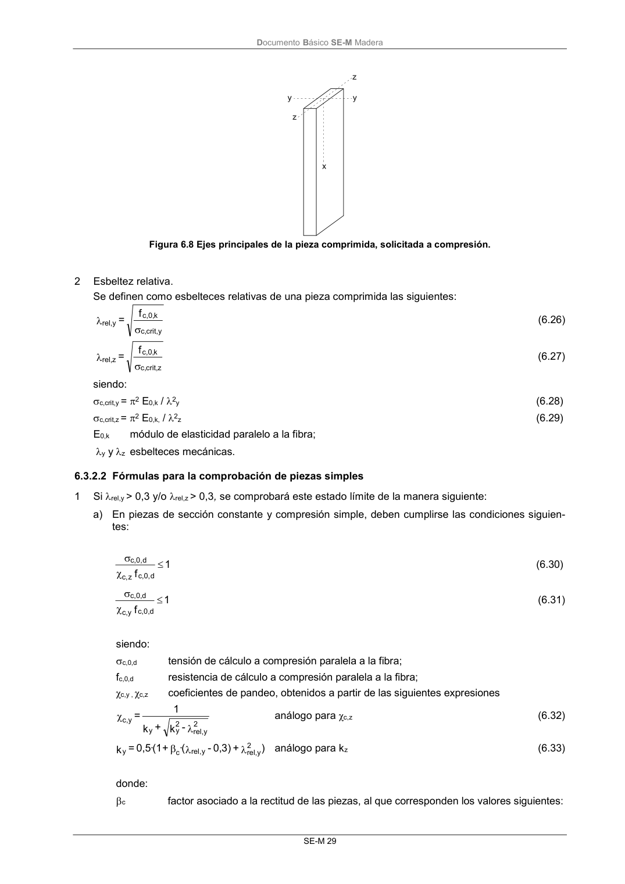

DB-SE-M Madera · edición 2019-12-20 · capa oficial
Documento DB-SE-M-oficial · SHA-256 del PDF 26b5819839ebfda78b0b119c5e76a0a37773b0d763c05688541870075df93718
Copia fiel del PDF fuente · Fuente oficial
Ficha de la disposición en la fuente oficial
Formatos: JSON del segmento · Markdown
6.3.2 Pandeo de columnas solicitadas a flexión compuesta. (Pandeo por flexión) 6.3.2.1 Definiciones: 6.3.2.1 Definiciones: 1 Esbeltez mecánica. Las esbelteces mecánicas de una pieza comprimida son las siguientes, (figura 6.8): a) para el pandeo en el plano xz, flectando respecto al eje y: i L = y y k, y (6.22) b) para el pandeo en el plano xy, flectando respecto al eje z: i L = z z k, z (6.23) siendo: Lk,y y Lk,z longitudes de pandeo en los planos xz y xy, respectivamente. Lk,y = y·L (6.24) Lk,z = z·L (6.25) L longitud del soporte o pieza; y y z coeficientes que dependen de las condiciones de restricción de los extremos de la pieza para el movimiento en el plano xz y xy, respectivamente. Los valores de para los casos más habituales pueden consultarse en el anejo G; iy e iz radiosde giro de la sección respecto a los ejes principales: y, z, respectivamente. DocumentoBásico SE-M Madera SE-M 29 Figura 6.8 Ejes principales de la pieza comprimida, solicitada a compresión. 2 Esbeltez relativa. Se definen como esbelteces relativas de una pieza comprimida las siguientes: crit,y c, k c,0, rel,y f = (6.26) z crit, c, k c,0, z rel, f = (6.27) siendo: c,crit,y = 2 E0,k / 2y (6.28) c,crit,z = 2 E0,k, / 2z (6.29) E0,k módulo de elasticidad paralelo a la fibra; y y z esbelteces mecánicas.
